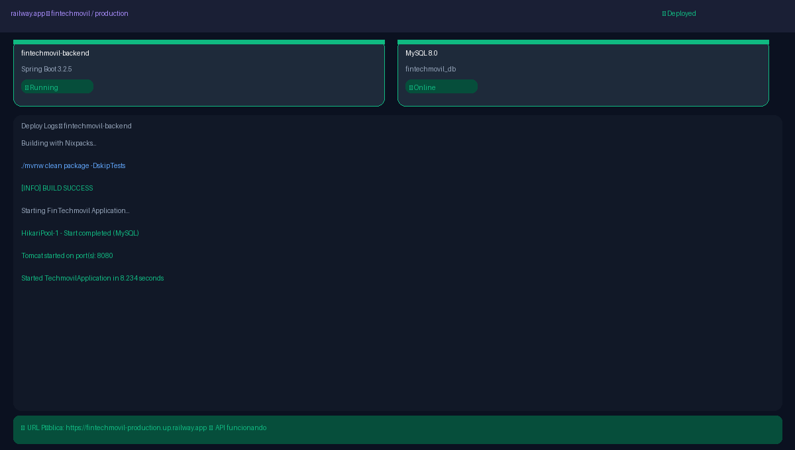
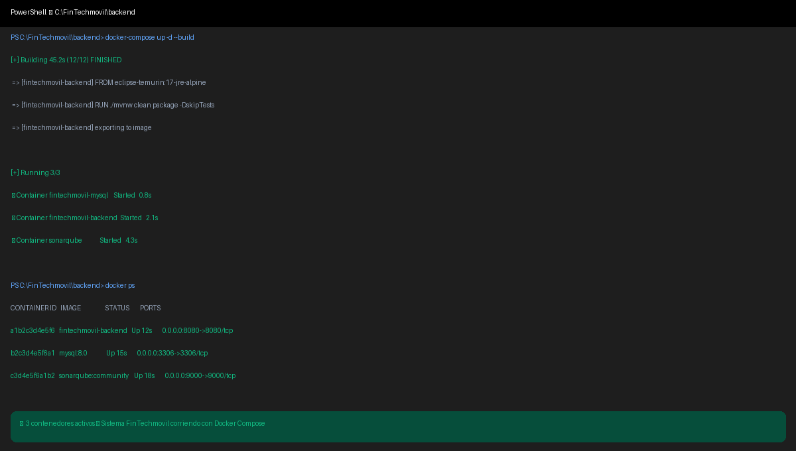
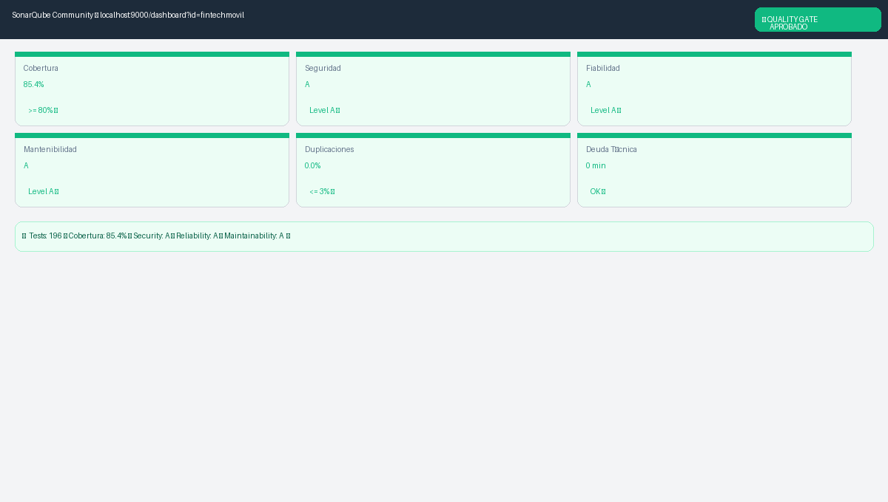
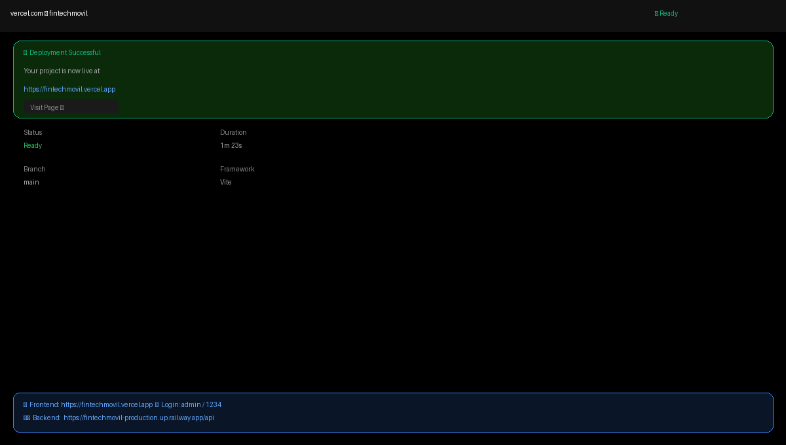
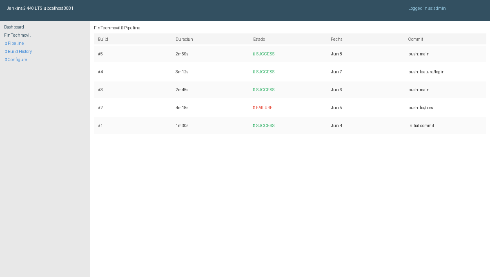
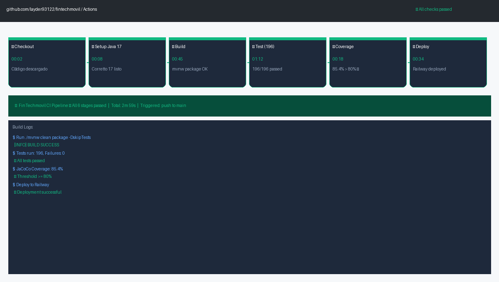

Manual de CI/CD¶
FinTechmovil ERP — Manual de Configuración CI/CD Pipeline. Universidad Peruana Unión, Sede Juliaca, Facultad de Ingeniería y Arquitectura, Escuela Profesional de Ingeniería de Sistemas. Asignatura: Pruebas y Despliegue del Software. Docente: Ing. David Mamani Pari. Semestre X — Grupo FinTechmovil. 2026.
1. Introducción¶
El pipeline CI/CD del proyecto FinTechmovil ERP automatiza desde que se escribe código hasta que llega a producción. Cada push a GitHub ejecuta tests, verifica calidad con SonarQube y despliega en Railway y Vercel.

Figura 1: GitHub Actions — 6 etapas: Checkout → Setup Java → Build → Test → Coverage → Deploy.2. GitHub Actions — paso a paso¶
2.1 Archivo .github/workflows/pipeline.yml¶
name: FinTechmovil CI Pipeline
on:
push:
branches: [ main ]
jobs:
build-test-deploy:
runs-on: ubuntu-latest
steps:
- uses: actions/checkout@v4
- uses: actions/setup-java@v4
with: { java-version: 17, distribution: corretto }
- run: cd backend && ./mvnw clean verify
2.2 Activar GitHub Actions¶
- En GitHub → pestaña "Actions" → "New workflow" → pegar el YAML.
- Commit y push → el pipeline corre automáticamente.
- Ver resultado: ✅ verde = todo OK · ❌ rojo = hay errores.

Figura 2: Jenkins Dashboard — Historial de builds con SUCCESS y FAILURE.3. Docker Compose — contenedores¶
3.1 Levantar todo el sistema¶
cd C:\FinTechmovil\backend
docker-compose up -d --build

Figura 3: Docker Compose — 3 contenedores activos: Backend, MySQL, SonarQube.| Contenedor | Puerto | Estado | Función |
|---|---|---|---|
| fintechmovil-backend | 8080 | ✅ Running | API Spring Boot |
| fintechmovil-mysql | 3306 | ✅ Online | Base de datos |
| sonarqube | 9000 | ✅ Running | Análisis calidad |
4. Tests y cobertura — Maven¶

Figura 4:./mvnw test — 196 tests, 0 fallos, BUILD SUCCESS, cobertura 85.4%.
4.1 Comandos¶
cd C:\FinTechmovil\backend
.\mvnw.cmd test # 196 tests
.\mvnw.cmd verify # tests + cobertura JaCoCo
.\mvnw.cmd spring-boot:run # iniciar servidor
5. SonarQube — análisis de calidad¶
 Figura 5: SonarQube — Quality Gate APROBADO: 85.4% cobertura, Security A, Reliability A, Maintainability A.
Figura 5: SonarQube — Quality Gate APROBADO: 85.4% cobertura, Security A, Reliability A, Maintainability A.
docker run -d --name sonarqube -p 9000:9000 sonarqube:community
.\mvnw.cmd clean verify sonar:sonar -Dsonar.projectKey=fintechmovil ^
-Dsonar.host.url=http://localhost:9000 -Dsonar.token=TU_TOKEN
6. Deploy en producción — Railway + Vercel¶
6.1 Railway (backend)¶
railway.app→ New Project → GitHub repo →fintechmovil.- Root Directory:
backend. + New→ Database → MySQL (se conecta automático).- Variables:
JWT_SECRET,ADMIN_USER,ADMIN_PASS,CORS_ORIGINS. - Settings → Networking → Generate Domain.

Figura 6: Railway — Backend Spring Boot y MySQL Online en producción.6.2 Vercel (frontend)¶
vercel.com→ New Project →fintechmovil.- Root Directory:
frontend. - Variable:
VITE_API_URL = https://TU-APP.up.railway.app/api. - Deploy → URL pública generada.

Figura 7: Vercel — Frontend React en producción con URL pública.| Servicio | URL Pública | Credenciales |
|---|---|---|
| Frontend | https://fintechmovil.vercel.app |
admin / 1234 |
| Backend API | https://fintechmovil.up.railway.app/api |
admin / admin123 |
| Swagger UI | https://fintechmovil.up.railway.app/swagger-ui/index.html |
Sin credenciales |